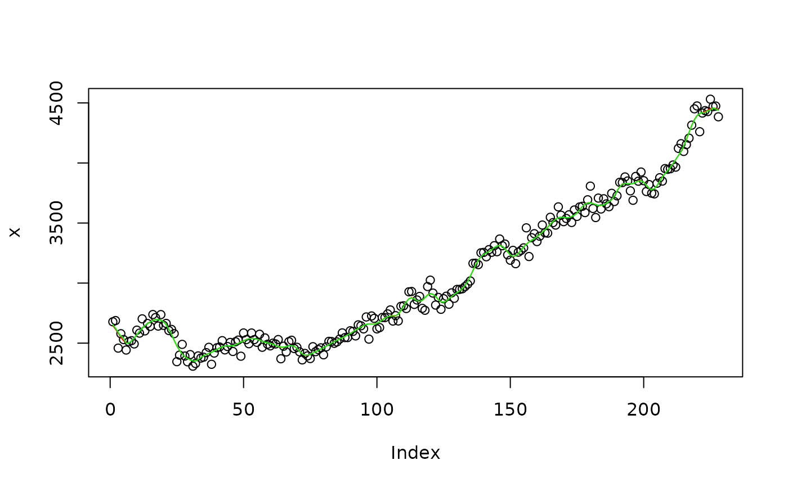

Perform the X-11 decomposition using custom trend filter
input time-series.
period.
coefficients of the filters used for the trend-cycle extraction from
the real-time asymmetric filter to the symmetric filter. Can be a, object of class "list",
"matrix", "lp_filter" or "rkhs_filter".
boolean indicating if the decomposition mode is multiplicative.
seasonal filters.
boundaries used for outlier correction in irregular.
a vector containing the additional output variables.
q<-x11plus(rjd3toolkit::Retail$AllOtherGenMerchandiseStores, 12)
x <- q$decomposition$sa
decomposition_lp <- x11plus_trend(x, trend.coefs = rjd3filters::lp_filter())
decomposition_rkhs <- x11plus_trend(x, trend.coefs = rjd3filters::rkhs_filter())
plot(x)
lines(decomposition_lp$decomposition[,"t"], col = "red")
lines(decomposition_rkhs$decomposition[,"t"], col = "green")
